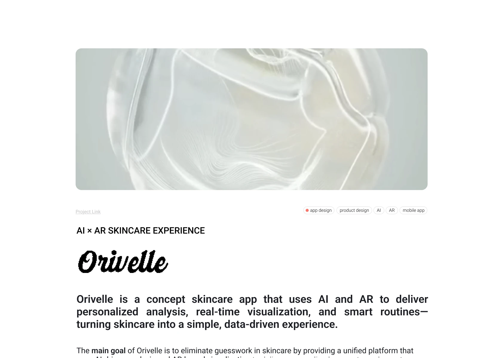
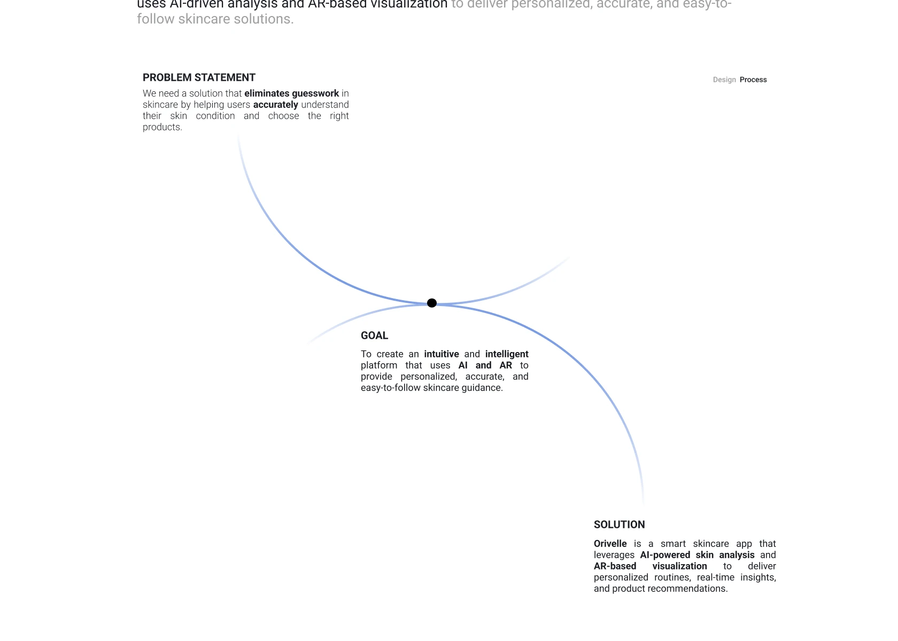
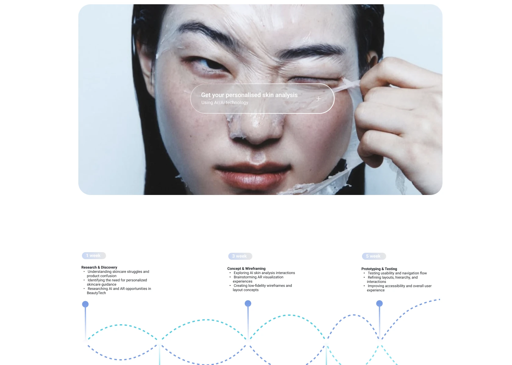
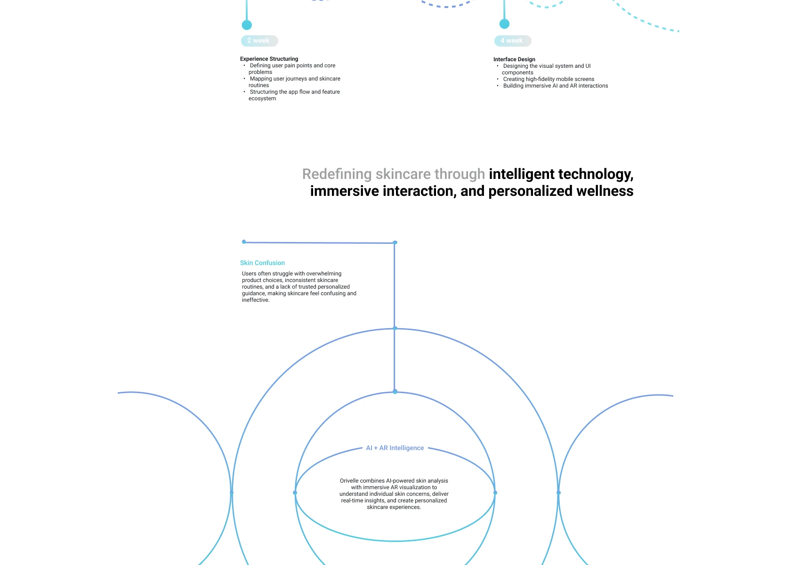
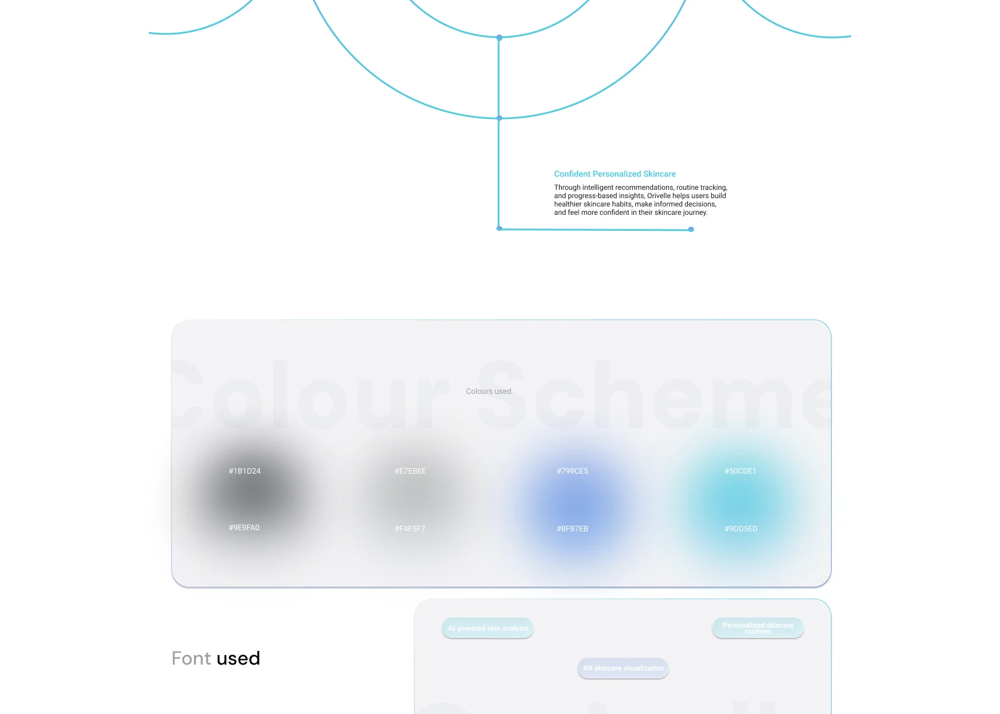
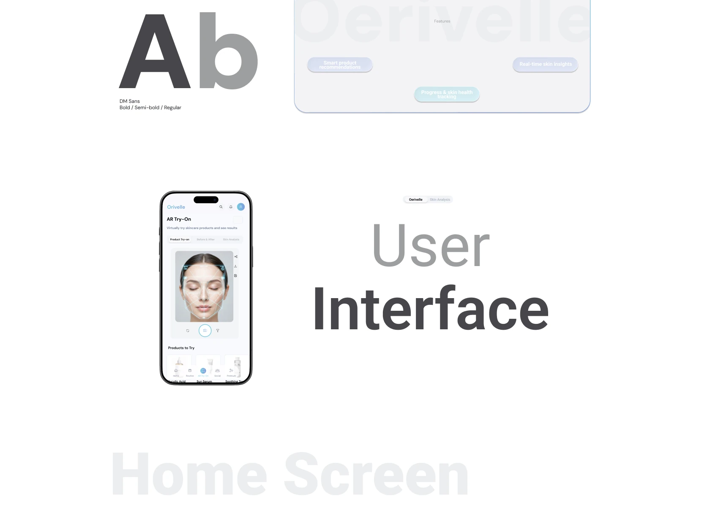
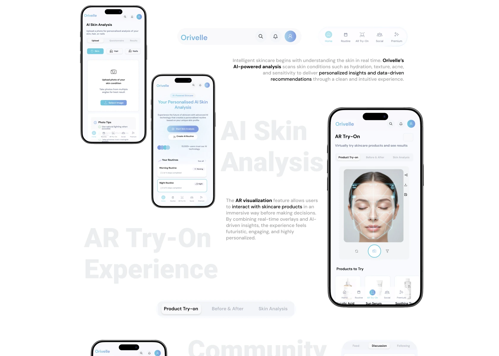
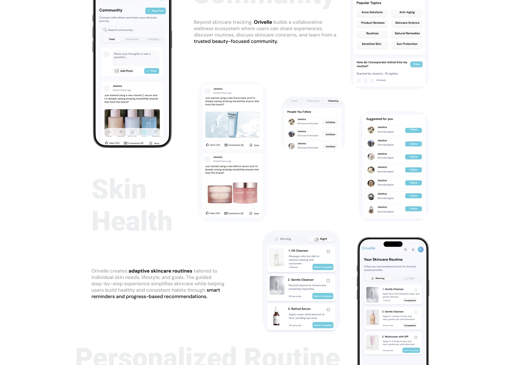
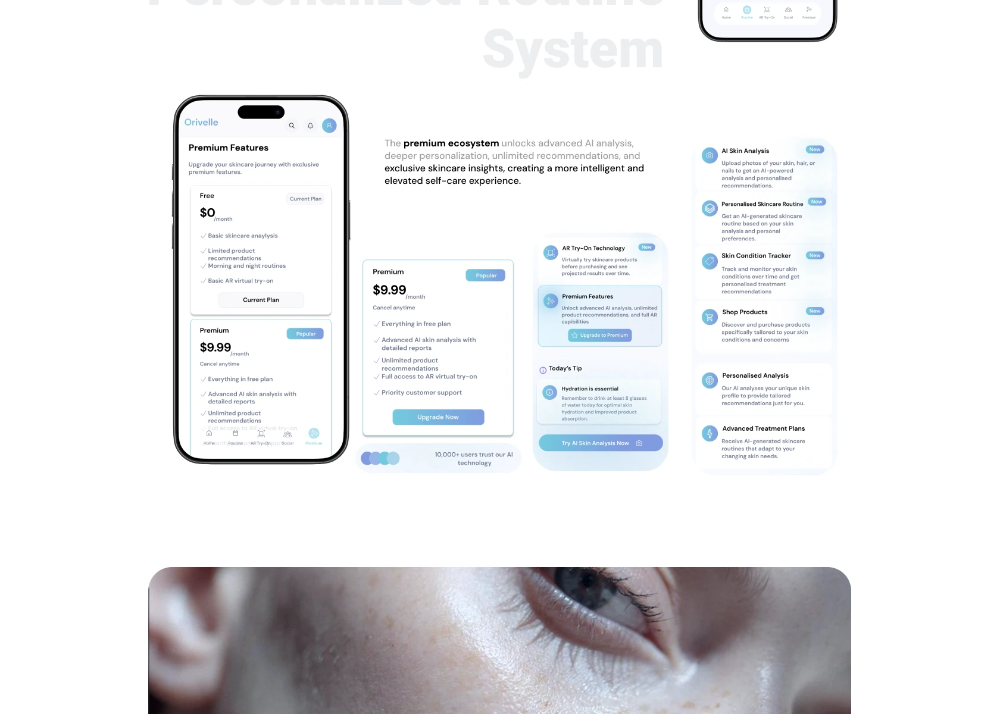
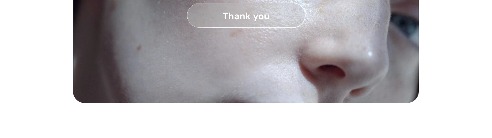

AI × AR SKINCARE EXPERIENCE
Orivelle
app design
product design
AI
AR
mobile app
The main goal of Orivelle is to eliminate guesswork in skincare by providing a unified platform that uses AI-driven analysis and AR-based visualization to deliver personalized, accurate, and easy-to-follow skincare solutions.
Orivelle is a concept skincare app that uses AI and AR to deliver personalized analysis, real-time visualization, and smart routines—turning skincare into a simple, data-driven experience.
Process
Design
We need a solution that eliminates guesswork in skincare by helping users accurately understand their skin condition and choose the right products.
PROBLEM STATEMENT
To create an intuitive and intelligent platform that uses AI and AR to provide personalized, accurate, and easy-to-follow skincare guidance.
GOAL
SOLUTION
Orivelle is a smart skincare app that leverages AI-powered skin analysis and AR-based visualization to deliver personalized routines, real-time insights, and product recommendations.
Get your personalised skin analysis
Using Ar/Ai technology
+
1 week
3 week
5 week
Research & Discovery Understanding skincare struggles and product confusion Identifying the need for personalized skincare guidance Researching AI and AR opportunities in BeautyTech
Concept & Wireframing Exploring AI skin analysis interactions Brainstorming AR visualization experiences Creating low-fidelity wireframes and layout concepts
Prototyping & Testing Testing usability and navigation flow Refining layouts, hierarchy, and interactions Improving accessibility and overall user experience
2 week
4 week
Experience Structuring Defining user pain points and core problems Mapping user journeys and skincare routines Structuring the app flow and feature ecosystem
Interface Design Designing the visual system and UI components Creating high-fidelity mobile screens Building immersive AI and AR interactions
Redefining skincare through intelligent technology, immersive interaction, and personalized wellness
Skin Confusion
Users often struggle with overwhelming product choices, inconsistent skincare routines, and a lack of trusted personalized guidance, making skincare feel confusing and ineffective.
AI + AR Intelligence
Orivelle combines AI-powered skin analysis with immersive AR visualization to understand individual skin concerns, deliver real-time insights, and create personalized skincare experiences.
Confident Personalized Skincare
Through intelligent recommendations, routine tracking, and progress-based insights, Orivelle helps users build healthier skincare habits, make informed decisions, and feel more confident in their skincare journey.
#1B1D24
Colours used
#E7EBEE
#799CE5
#50CDE1
#9E9FA0
#F4F5F7
#8FB7EB
#9DD5ED
AI-powered skin analysis
Smart product recommendations
Progress & skin health tracking
Real-time skin insights
AR skincare visualization
Personalized skincare routines
Ab
Font used
DM Sans Bold / Semi-bold / Regular
User Interface
Oerivelle
Skin Analysis
Home Screen
AI Skin Analysis
Community
Personalized Routine System
Skin Health
AR Try-On Experience
Intelligent skincare begins with understanding the skin in real time. Orivelle’s AI-powered analysis scans skin conditions such as hydration, texture, acne, and sensitivity to deliver personalized insights and data-driven recommendations through a clean and intuitive experience.
The AR visualization feature allows users to interact with skincare products in an immersive way before making decisions. By combining real-time overlays and AI-driven insights, the experience feels futuristic, engaging, and highly personalized.
Beyond skincare tracking, Orivelle builds a collaborative wellness ecosystem where users can share experiences, discover routines, discuss skincare concerns, and learn from a trusted beauty-focused community.
Orivelle creates adaptive skincare routines tailored to individual skin needs, lifestyle, and goals. The guided step-by-step experience simplifies skincare while helping users build healthy and consistent habits through smart reminders and progress-based recommendations.
The premium ecosystem unlocks advanced AI analysis, deeper personalization, unlimited recommendations, and exclusive skincare insights, creating a more intelligent and elevated self-care experience.
Thank you